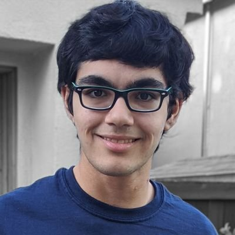

Multimodal foundation models for healthcare
Sophont builds open, universal medical AI that understands pathology, neuroimaging, clinical text and more—empowering clinicians and researchers worldwide.
Read our $8.75 M seed announcement →Team
-

Tanishq Mathew Abraham – CEO
Former Research Director at Stability AI; founded MedARC, the world’s largest online medical AI research community. -
Paul Scotti – CTO
Former Head of NeuroAI at Stability AI and postdoc at Princeton University. Paul brings over a decade of experience in computational neuroscience.